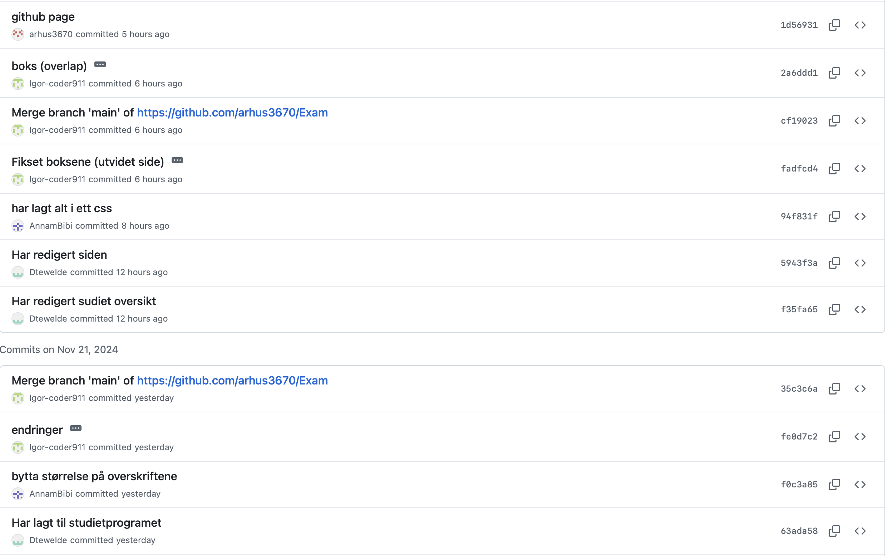
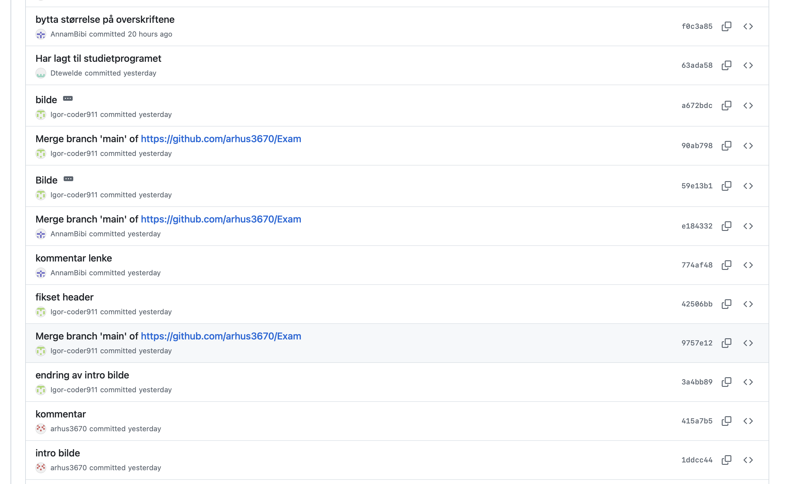
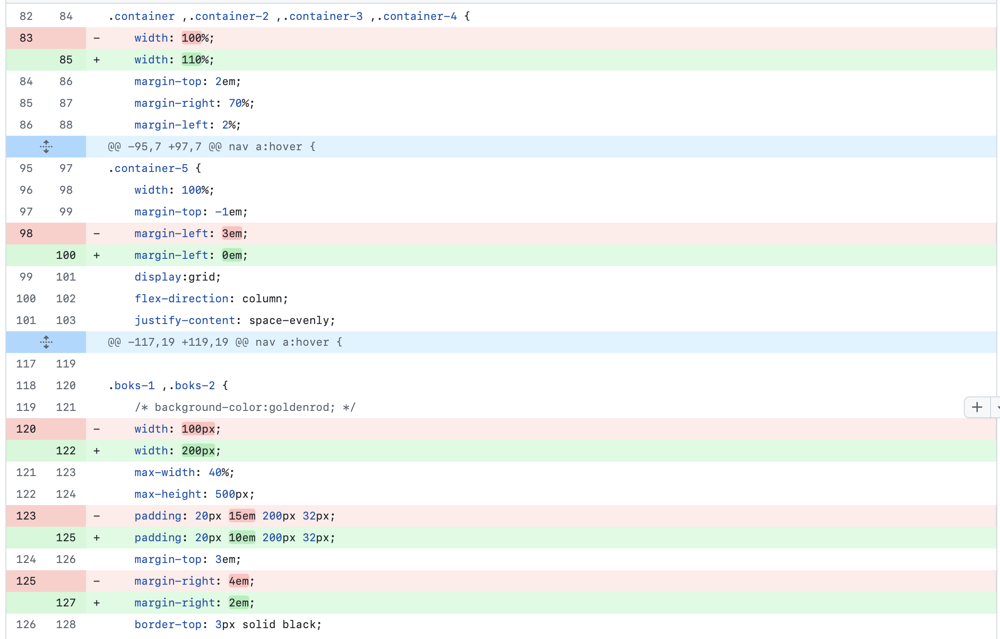
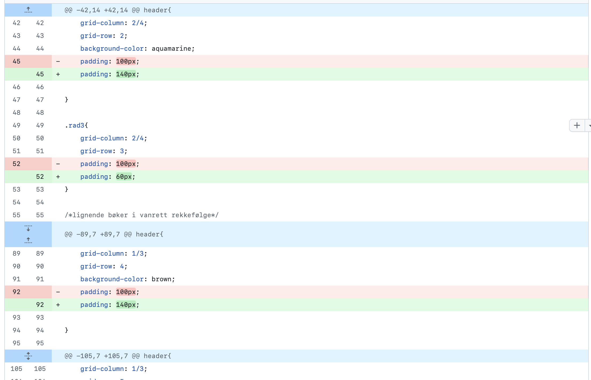

GitHub
Bilder av github samarbeid


Bilder av spesifikke endringer


Fordeler med github
For å jobbe sammen som en gruppe har vi hatt behov for å jobbe med github. Github er en fin plattform/app som gjør det enkelt å samarbeide med andre mennesker. Det er fint å bruke dette når man samarbeider i større grupper fordi da kan man se hva andre har endret på, og hva du selv har endret på ved å pushe og pulle.
Det er et fint verktøy for å være oppdatert på hva din gruppe har gjort. Du kan samarbeide med andre uten å møte dem fysisk og dere kan kommunisere enkelt med hverandre uten å sende noe spesifikt til den personen. Når to personer gjør samme endring på ett sted så kommer det opp at, hvis man pusher dette vil en merge konflikt skje. Dette hjelper deg med å forstå hvilke endringer man vil beholde av de to, og det forhindrer at det den andre personen gjøre blir borte. Hvis noen bruker en annen bransje og vil merge den i main bransjen må den personen få godkjennelse av noen andre sånn at noen andre kan se det personen har gjort før det blir en del av main bransjen.
Github er et fint verktøy for å se hvilke endringer andre har gjort, fordi når man får opp endringene få man også opp det som har blitt endret. Så man kan spesifikt se akkurat hva som har blitt endret. Endrer man på strørrelsen av et bilde vil det komme opp i rødt det du endret på, samtidig vil det vises i grønt de endringene du endret til.